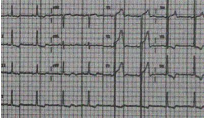
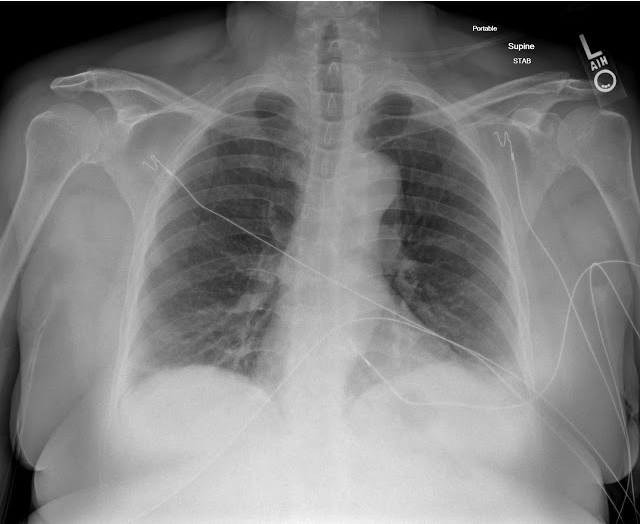
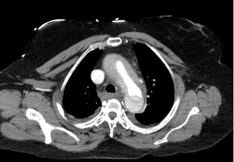
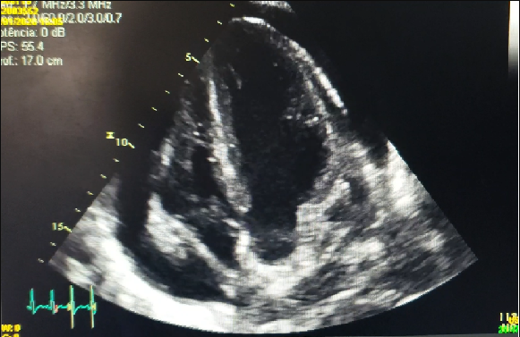
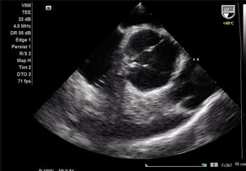

Q1. Você está de plantão em uma UPA no interior de Minas Gerais, o hospital de referência está a pouco mais de 3 horas de distância. No seu primeiro dia de trabalho você encontra dona Arlinda, 62 anos, hipertensa e diabética, que procura o serviço médico por um quadro de dor torácica iniciada há cerca de 3 horas, acompanhada por dispneia. Relata que já apresentou dor semelhante anteriormente, mas com melhora após uso de Dipirona. Hoje não fez uso de nenhuma medicação para a dor. Faz uso de Hidroclorotiazida, Losartana e Metformina. Refere que no momento da dor estava trocando a resistência do chuveiro de sua casa. Avaliada pela enfermagem na triagem com os seguintes sinais vitais: PA: 180x93 mmHg, FC 89 bpm, Temperatura 36,8ºC, Glicemia Capilar 160 mg/dL, SatO2 92% em ar ambiente.
Qual a sua conduta inicial?
Q2. Realizado ECG, abaixo. Questionado sobre características da dor, a paciente refere localização em região precordial, irradiada para epigástrio e dorso. Nega melhora com repouso.
Qual a conduta a seguir?
Realizado Rx de tórax, abaixo:
Qual o próximo passo?
É realizada infusão de alteplase EV após monitorização da paciente em sala de emergência. Paciente evolui com PA 68x43 mmHg, rebaixamento de nível de consciência e um episódio de hematêmese. Exame físico: mau estado geral, ausculta cardíaca com hipofonese importante de bulhas cardíacas, turgência jugular bilateral, FC 53 bpm. SatO2 82% em ar ambiente, MV+ com estertores até terço médio bilateralmente.
Optado por intubação orotraqueal, solicitados hemoderivados e vitamina K. Paciente apresenta novo episódio de hematêmese maciça e PCR após. Realizadas manobras de ressuscitação por 40 minutos, sem sucesso.
Fim do questionário.
{{ story.endGame(); }}Realizada angiotomografia de aorta, abaixo:
Qual o diagnóstico e conduta?
Paciente é levada para a sala de emergência e monitorizada. Mantém quadro de dor torácica importante, sem sinais de instabilidade hemodinâmica. PA 200x105 mmHg, FC 98 bpm. SatO2 91%. Exame físico: estado geral regular, sudoreica. Ausculta pulmonar com diminuição discreta de MV em bases bilateralmente, FR 18 irpm. Ausculta cardíaca com bulhas rítmicas, normofonéticas, sopro diastólico em borda esternal direita, regurgitativo.
Qual o próximo passo?
Após realização das medidas, paciente refere melhora parcial do quadro de dor torácica. Primeira troponina negativa. PA 120x92 mmHg, FC 70 bpm. SatO2 96% com cateter nasal de O2 2l por minuto. Ausculta pulmonar com MV reduzido em base bilateralmente. Ausculta cardíaca com bulhas rítmicas, hipofonese moderada, sopro diastólico em borda esternal direita, regurgitativo, menos pronunciado.
Qual a próxima conduta?
Realizado ecocardiograma abaixo:
Qual a conduta frente ao principal achado?
Paciente evolui com quadro de síncope. PA 80x54, FC 51 bpm, satO2 92% com cateter de O2. Monitor mostra ritmo regular, com complexos QRS estreitos, com tamanhos alternantes. Ao exame físico: mau estado geral, ausculta cardíaca com hipofonese importante de bulhas associado a turgência jugular bilateralmente.
Qual a conduta imediata?
Paciente evolui para PCR. Monitor indica assistolia, realizado protocolo de linha reta com confirmação. Realizadas medidas de reanimação por 40 minutos, sem sucesso.
Fim do questionário.
{{ story.endGame(); }}Realizada pericardiocentese com drenagem de 400ml de sangue. Paciente apresentou pouca melhora. Optado por realização de ecocardiograma transesofágico de urgência, abaixo:
Qual o diagnóstico e conduta imediata?
Paciente submetida a cirurgia de correção de dissecção aórtica Stanford A. Encaminhada para recuperação em UTI coronariana sem complicações no pós operatório.
Fim do questionário.
{{ story.endGame(); }}